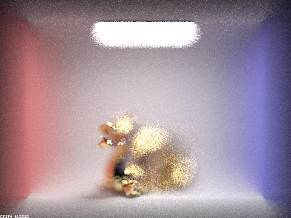

Use this section to write an overview of the assignment. All of the text in your write-up should be in your own words. If you need to add additional HTML features to this document, you can search the http://www.w3schools.com/ website for instructions. To edit the HTML, you can just copy and paste existing chunks and fill in the text and image file names appropriately.
The website writeup is intended to be a self-contained walkthrough of the assignment: we want this to be a piece of work which showcases your understanding of relevant concepts through both mesh images as well as written explanations about what you did to complete each part of the assignment. Try to be as clear and organized as possible when writing about your own output files or extensions to the assignment. We want to understand what you've achieved and how you've done it!
If you are well-versed in web development, feel free to ditch this template and make a better looking page. Just make sure that you include all the components as we've laid them out here.
Part 1: Mirror and Glass Materials
Show a sequence of six images of scene CBspheres.dae rendered with max_ray_depth set to 0, 1, 2, 3, 4, 5, and 100.
|
Results Caption: Spheres - max_ray_depth = 0
|
|
Results Caption: Spheres - max_ray_depth = 1
|
|
Results Caption: Spheres - max_ray_depth = 2
|
|
Results Caption: Spheres - max_ray_depth = 0
|
|
Results Caption: Spheres - max_ray_depth = 4
|
|
Results Caption: Spheres - max_ray_depth = 5
|
|
Results Caption: Spheres - max_ray_depth = 100
|
Point out the new multibounce effects that appear in each image.
With 0 bounces, the only visible object is the skylight. With 1 bounce, the balls appear and you can see the surroundings and the skylight is reflected and refracted on the balls
as with max depth 1, this is the same as direct illumination. With 2 bounce, the balls show refraction and reflection, but the glass ball is very dark, meaning that
only some bounces have completed. With 3 bounce, light hits under the glass ball and there is less contrast of colors on the mirror ball. The reflection of the
glass ball on the mirror ball is also really dark. With 4 bounce,
we see the shadows are lighter and see refraction at the bottom of the glass ball. There is also light being shined on the blue wall. With 5 bounce,
there isn't much of a difference except for even sligtly lighter shadows. With 100 bounce, the reflected/refract skylight on the glass ball has white dots around it
showing more bounces happening on the glass ball
Explain how these bounce numbers relate to the particular effects that appear.
0 bounce: Only things that have an emission (in other words, light sources) will be shown.
1 bounce: This is the same as doing direct illumination so only light that comes directly from a light source bounces on the surfaces, no global illumination occurs yet.
2 bounce: Light that comes from the light source and refracts into the glass ball cannot exit again causing the glass ball to look extremely dark.
3 bounce: Light hits the surface under the glass ball because light can not exit from the glass ball. The reflection of the glass
ball on the mirror ball is dark because 4 bounces would need to occur for the exiting refractions of the glass ball to reflect on the mirror ball.
4 bounce: Lighter glass ball because more light because lighter and darker colors are more mixed after more bounces. Exiting light from the glass ball also bounces from the blue wall.
5 bounce: Same as 4 bounce.
100 bounce: Mostly same as 4 and 5 bounce but the area around the refracted/reflected skylight on the glass ball is much lighter because
of light bouncing from the ceiling (near the skylight) onto the ball.
Part 4: Depth of Field
In a few sentences, explain the differences between a pinhole camera model and a thin-lens camera model.
A pinhole model camera captures light in a completely straight way. Light at one point in the focus plane always comes from the same place in the image plane. With a thin-lens camera model however, light can bend and refract through a thin lens so light at some point in the focus plane may come from varying directions/in different ways causing effects that lead to different field of views.
Show a "focus stack" where you focus at 4 visibly different depths through a scene.
|
Results Caption: Dragon 1.23 radius 4.00 focal distance
|
|

Results Caption: Dragon 1.23 radius 4.50 focal distance
|
|
Results Caption: Dragon 1.23 radius 5.0 focal distance
|
|
Results Caption: Dragon 1.23 radius 5.25 focal distance/figcaption>
|
Show a sequence of 4 pictures with visibly different aperture sizes, all focused at the same point in a scene.
|
Results Caption: Dragon 0.75 radius 4.56 focal distance
|
|
Results Caption: Dragon 1.23 radius 4.56 focal distance
|
|
Results Caption: Dragon 1.75 radius 4.56 focal distance
|
|
Results Caption: Dragon 2.50 radius 4.56 focal distance/figcaption>
|
A Few Notes On Webpages
Here are a few problems students have encountered in the past. You will probably encounter these problems at some point, so don't wait until right before the deadline to check that everything is working. Test your website on the instructional machines early!